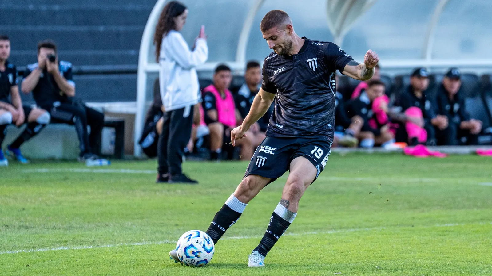

Football · Match report
Brennholt 0–2 Ardenport: the leaders win the river derby
Two goals in eight second-half minutes, a penalty save and a five-point lead at the top of the Valemont League.
Read the report